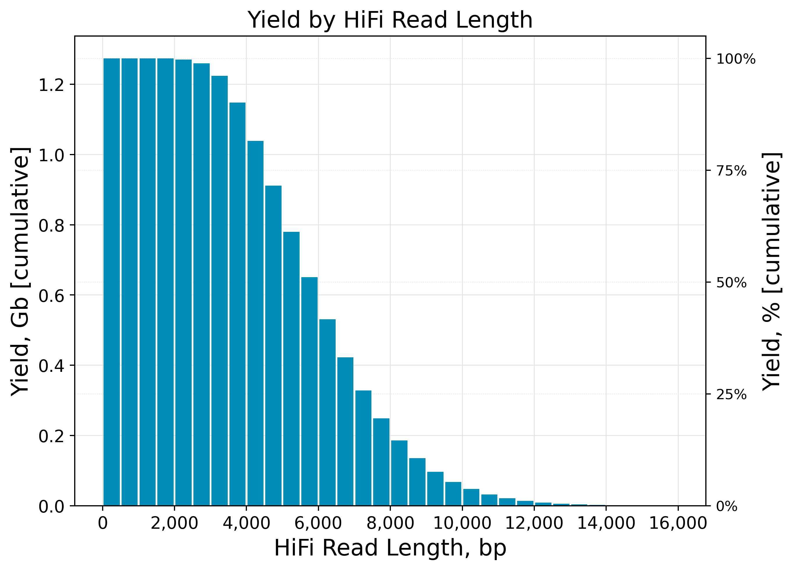
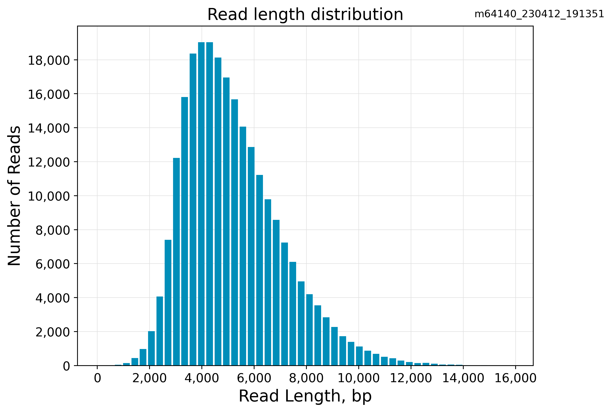
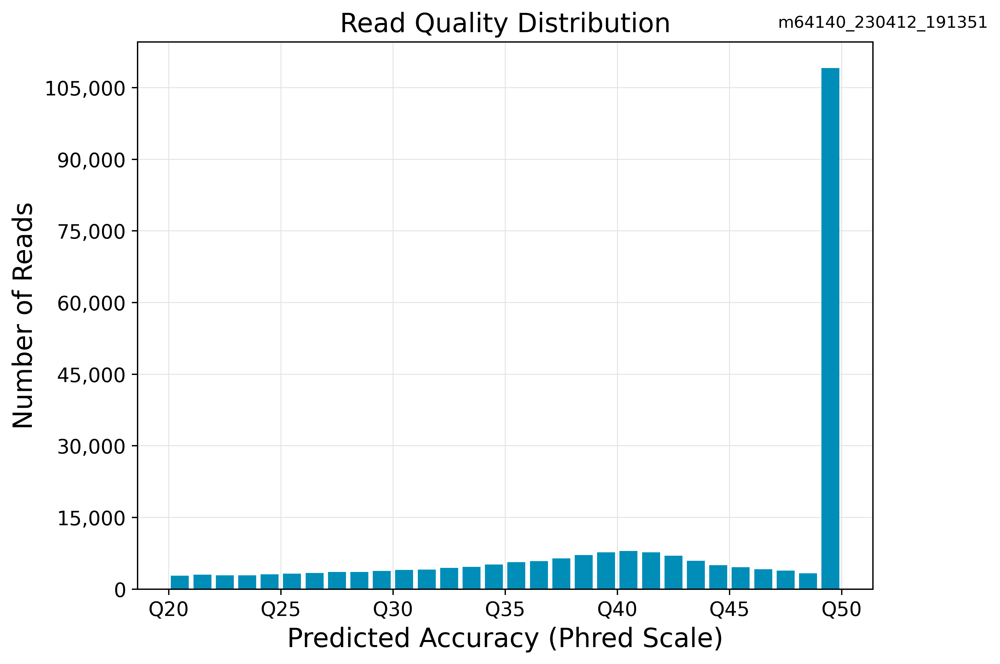
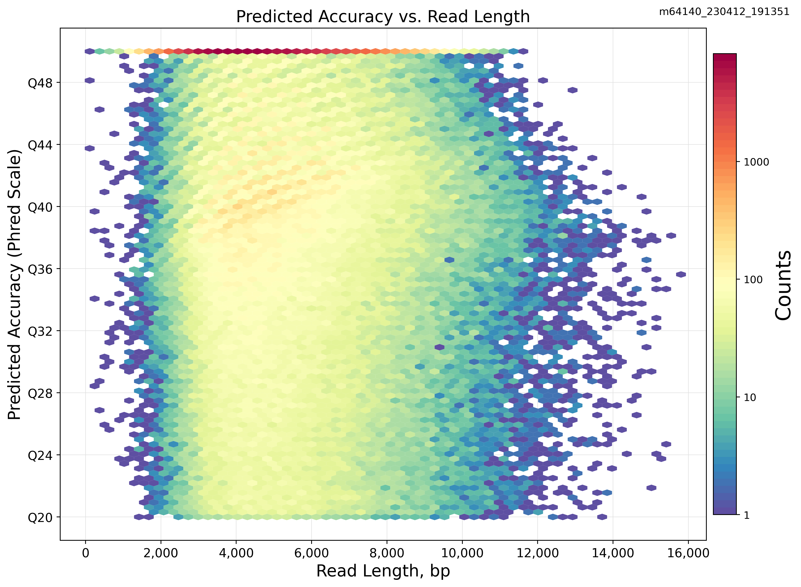

CCS Analysis Report
Attributes
- HiFi reads: 245858
- HiFi reads yield: 1274241719
- HiFi reads length (mean): 5182
- HiFi reads length (median, bp): 4869
- HiFi Read Length N50 (bp): 5554
- HiFi Read Quality (median): Q45
- HiFi Read Quality (median): 45
HiFi Read Length Summary
| Read Length (kb) |
Reads |
Reads (%) |
Yield (Gb) |
Yield (%) |
| ≥ 0 |
245858 |
100.0 |
1274241719 |
100.0 |
| ≥ 5,000 |
116069 |
47.20977149411449 |
780044254 |
61.21634870126239 |
| ≥ 10,000 |
4262 |
1.733520975522456 |
47251862 |
3.70823379076635 |
| ≥ 15,000 |
30 |
0.01220216547763343 |
498411 |
0.03911432129150058 |
| ≥ 20,000 |
1 |
0.00040673884925444766 |
22080 |
0.0017327952515420663 |
| ≥ 25,000 |
0 |
0.0 |
0 |
0.0 |
| ≥ 30,000 |
0 |
0.0 |
0 |
0.0 |
| ≥ 35,000 |
0 |
0.0 |
0 |
0.0 |
| ≥ 40,000 |
0 |
0.0 |
0 |
0.0 |
HiFi Read Quality Summary
| Read Quality (Phred) |
Reads |
Reads (%) |
Yield (Gb) |
Yield (%) |
| ≥ Q20 |
245858 |
100.0 |
1274241719 |
100.0 |
| ≥ Q30 |
213587 |
86.87413059570972 |
1094831964 |
85.92027302788381 |
| ≥ Q40 |
158634 |
64.52261061263006 |
791389939 |
62.10673588846765 |
| ≥ Q50 |
105906 |
43.076084569141535 |
489426562 |
38.40924015453617 |
Read Length Distribution
HiFi read length distribution
Yield by HiFi Read Length

Read length distribution

Read Quality Distribution

Predicted Accuracy vs. Read Length
